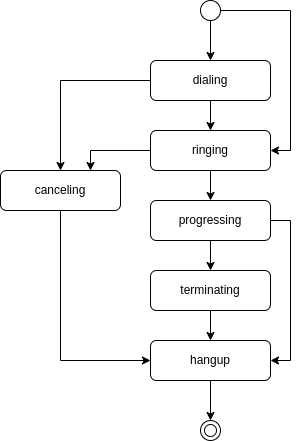

Struct Call¶
Call¶
{
"id": "<string>",
"flow_id": "<string>",
"type": "<string>",
"master_call_id": "<string>",
"chained_call_ids": [
"<string>",
...
],
"recording_id": "<string>",
"recording_ids": [
"<string>",
...
],
"source": {
...
},
"destination": {
...
},
"status": "<string>",
"action": {
...
},
"direction": "<string>",
"hangup_by": "<string>",
"hangup_reason": "<string>",
"tm_create": "<string>",
"tm_update": "<string>",
"tm_progressing": "<string>",
"tm_ringing": "<string>",
"tm_hangup": "<string>"
}
- id: Call’s ID.
- flow_id: Call’s flow id.
- type: Call’s type. See detail here.
- master_call_id: Master call’s id. If the master_call_id set, it follows master call’s hangup.
- chained_call_ids: List of chained call ids. If the call hangs up, the chained call also will hangup.
- recording_id: Shows currently recording id.
- recording_ids: List of recording ids.
- source: Source address info. See detail here.
- destination: Destination address info. See detail here.
- status: Call’s status. See detail here.
- action: Call’s current action. See detail here.
- direction: Call’s direction. See detail here.
- hangup_by: Shows call’s hangup end. See detail here.
- hangup_reason: Show call’s hangup reason. See detail here.
Example¶
{
"id": "d9d32881-12fd-4b19-a6b2-6d5b6b6acf76",
"flow_id": "4553c074-c88d-49e5-9d47-5c01598ac099",
"type": "flow",
"master_call_id": "00000000-0000-0000-0000-000000000000",
"chained_call_ids": [],
"recording_id": "00000000-0000-0000-0000-000000000000",
"recording_ids": [],
"source": {
"type": "tel",
"target": "+821028286521",
"target_name": "",
"name": "",
"detail": ""
},
"destination": {
"type": "tel",
"target": "+821021656521",
"target_name": "",
"name": "",
"detail": ""
},
"status": "hangup",
"action": {
"id": "0db08d32-b7d7-470d-8bda-9feff0877077",
"next_id": "00000000-0000-0000-0000-000000000000",
"type": "talk",
"option": {
"text": "Hello. This is Sungtae, nice to meet you. hahaha",
"gender": "female",
"language": "en-US"
},
"tm_execute": "2022-05-01 15:10:38.785510878"
},
"direction": "outgoing",
"hangup_by": "local",
"hangup_reason": "normal",
"tm_create": "2022-05-01 15:10:23.414798",
"tm_update": "2022-05-01 15:10:44.781000",
"tm_progressing": "2022-05-01 15:10:38.721000",
"tm_ringing": "2022-05-01 15:10:26.978000",
"tm_hangup": "2022-05-01 15:10:44.781000"
}
Type¶
Call’s type.
| Type | Description |
|---|---|
| flow | Executing the call-flow |
| conference | Conference call. |
| sip-service | sip-service call. Will execute the corresponding the pre-defined sip-service by the destination. |
Status¶
Call’s status.
| Status | Description |
|---|---|
| dialing | The call is created. We are dialing to the destination. |
| ringing | The destination has confirmed that the call is ringng. |
| progressing | The call has answered. The both endpoints are talking to each other. |
| terminating | The call is terminating. |
| canceling | The call originator is canceling the call. |
| hangup | The call has been completed. |
state diagram
Direction¶
Call’s direction.
| Direction | Description |
|---|---|
| incoming | The call was coming from the outside of VoIPBIN. |
| outgoing | The call was generated by VoIPBIN. |
Hangup by¶
The Hangup by shows which endpoint sent the hangup request first.
| hangup by | Description |
|---|---|
| remote | The remote end hangup the call first. |
| local | The local end hangup the call first. |
Hangup reason¶
Shows why the call was hungup.
| Reason | Description |
|---|---|
| normal | The call has ended after answer. |
| failed | The call attempt(signal) was not reached to the phone network. |
| busy | The destination is on the line with another caller. |
| cancel | Call was cancelled by the originator before it was answered. |
| timeout | Call reached max call duration after it was answered. |
| noanswer | Destination didn’t answer until destination’s timeout. |
| dialout | The call reached dialing timeout before it was answered. This timeout is fired by our time out(outgoing call). |
| amd | Hangup caused by the action type amd. The call’s amd action result hung up the call. |